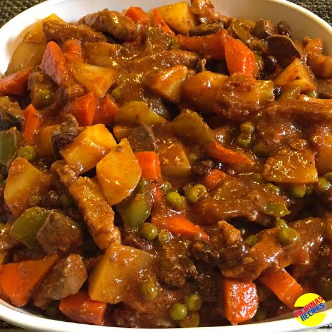

Pork Afritada
Back to Home
Pork Afritada

Pork, liver, and potatoes are cooked in a tomato base to make this Filipino stew elegant enough for special occasions.
| Prep Time |
30 mins |
| Cook time |
30 hour |
| Total Time |
1 Hour |
| Servings |
10 |
| Yield |
10 |
Pork Afritada Ingredients
- 2 ¼ pounds boneless pork, cut into bite-sized pieces
- 2 tablespoons soy sauce
- ½ lemon, juiced
- 2 pounds pork liver
- 3 tablespoons olive oil
- 2 potatoes, quartered
- 2 tablespoons olive oil
- 1 onion, chopped
- 2 cloves garlic, minced
- 2 large tomatoes, diced
- 1 green bell pepper, cut into chunks
- Salt and ground black pepper to taste
Directions
- STEP 1:Place the pork in a large pot; pour enough water into the pot to cover the pork. Stir the soy sauce and lemon juice into the water. Bring the mixture to a boil for 5 minutes. Remove the meat and set aside. Discard the liquid.
- STEP 2:Refill the pot with fresh water; add the pork liver and bring to a boil for about 5 minutes. Remove the liver and allow to cool; cut into bite sized pieces. Set aside.
- STEP 3:Heat 3 tablespoons olive oil in a large skillet over medium-high heat; fry the potatoes in the hot oil until golden brown and cooked through, 7 to 10 minutes. Remove the potatoes to a plate lined with paper towels. Add 2 more tablespoons olive oil to the skillet and allow to get hot. Cook and stir the onion and garlic in the hot oil until fragrant, 3 to 5 minutes. Add the pork and pork liver to the skillet; cover and cook for 5 minutes. Stir the tomatoes into the mixture; cook together, stirring occasionally, another 5 minutes. Return the potatoes to the skillet with the green bell pepper. Season with salt and pepper. Cook and stir another 5 minutes.
Nutrition Fa
| Calories |
324 |
| Fat |
17g |
| Carbs |
14g |
| Protein |
29g |